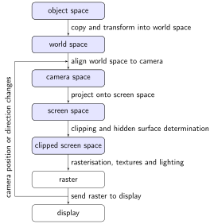
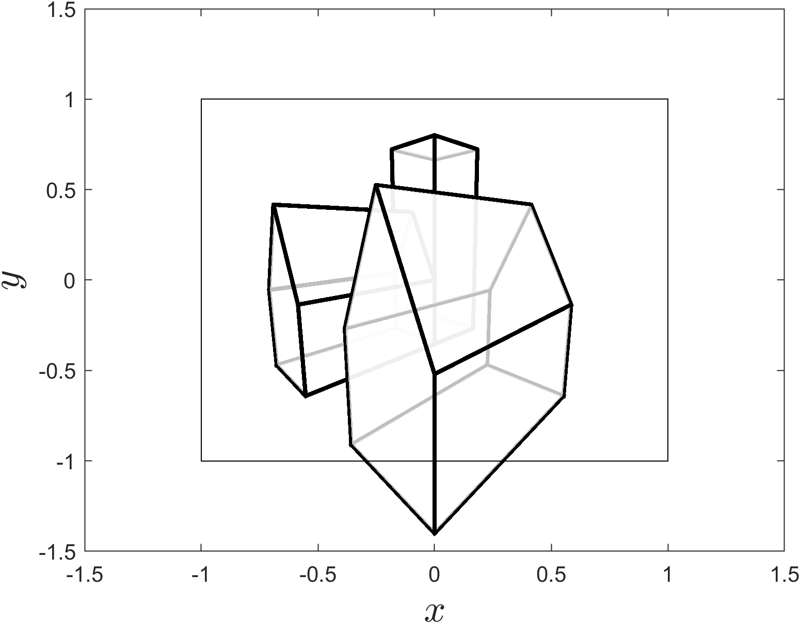

Clipping
Contents
Clipping#

Consider the plot of the screen space from Example 25 where some of house object closest to the camera lies partially outside of the unit cube representation of the [viewing frustum]((viewing-frustum-section). The region inside of this unit cube contains the space that is visible to the viewer and is known as the visible region. Any objects that are outside of the visible region needs to be ignored from this point onwards in the viewing pipeline and any objects that lie partially outside need to be clipped to the edges of the visible region.
{kind=link}

Fig. 48 Some objects are outside of the viewing region.#
The Cyrus-Beck algorithm#
The Cyrus-Beck aglorithm [Cyrus and Beck, 1978] calculates the intersection point between a line and a polygon. Consider the diagram in ?? which shows the line joining two points \(\mathbf{a} = (a_x, a_y, a_z)\) and \(\mathbf{b} = (b_x, b_y, b_z)\) that passess through the plane defined by the normal vector \(\mathbf{n}\) and point \(\mathbf{p}\). Clipping of the line \(\mathbf{a} \to \mathbf{b}\) to the plane requires the calculation of the point where the line intersects with the plane, \(\mathbf{c}\).
To calculate the intersection point \(\mathbf{c}\) we use the vector formula for calculating the shortest distance between a point and a plane, equation (15)
The vector equation of the line \(\mathbf{a} \to \mathbf{b}\) is
and substituting into equation (27)
The intersection point \(\mathbf{c}\) is where the distance to the plane is zero so setting \(d=0\) and rearranging to make \(t\) the subject gives
This expression for \(t\) can be substituted into equation (28) to give \(\mathbf{c}\).
Cohen-Sutherland clipping algorithm#
Each of the six faces that form the visible region are defined by defined by a normal vector \(\mathbf{n}\) and the position \(\mathbf{p}\) one of the vertices. The normal vectors for the edges of the screen space are assumed to point towards the interior of the screen space
where the edges labelled bottom, front, right, back, left and top are from the point of view of the viewer looking down the \(z\) axis. The position vector \(\mathbf{p}\) for the edges of the screen space can be any point on the plane so we can use